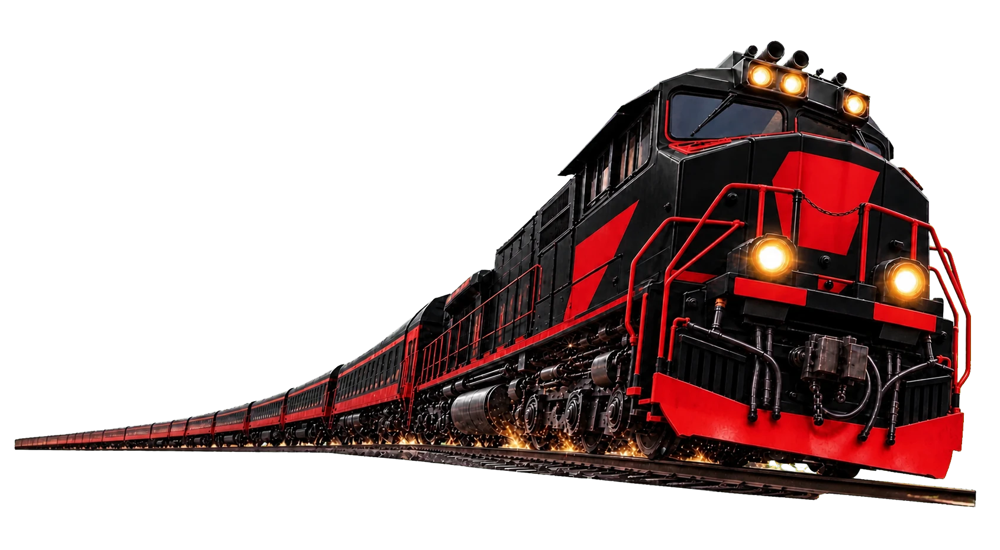

Trens e rotas
Posição, itinerário e disponibilidade no mesmo fluxo.
TRACKING / ACTIVECONTROLE FERROVIÁRIO / PROJECT 001
Rotas, trens, estações, sensores e manutenções reunidos em uma central operacional.

01 / REDE OPERACIONAL
02 / SISTEMA
Posição, itinerário e disponibilidade no mesmo fluxo.
TRACKING / ACTIVELeitura dos pontos críticos da operação ferroviária.
TELEMETRY / ONLINEHistórico e planejamento para reduzir parada inesperada.
SCHEDULE / READYControle dos terminais e conexões de cada linha.
NETWORK / STABLE03 / PARTIDA LOCAL
$ git clone https://github.com/lucaspwalter/ferroviaria-llgr.git
$ cd ferroviaria-llgr
$ docker compose up_